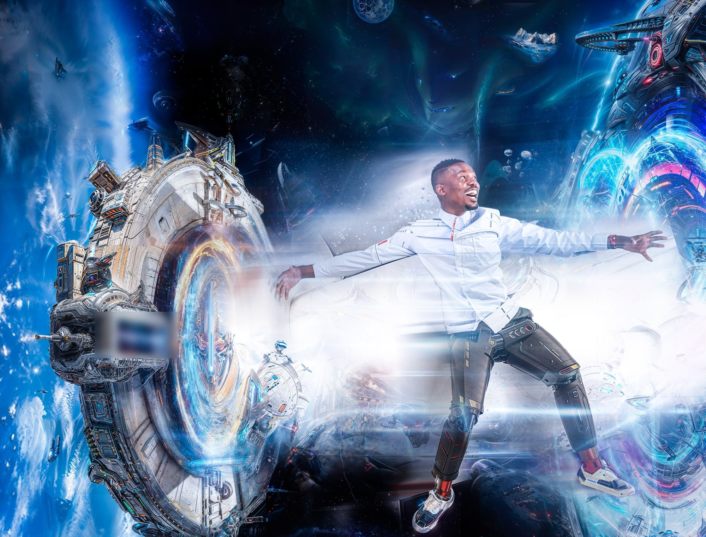

My past runs through a lab, classrooms, maker spaces and industry. Each part pushed me further toward what I want to build next. Open a gear to see where I've been.

Where it's taking me
bitsized is a platform that breaks the silos of learning. Students build robotics from scratch, learn the math behind it, and pair it with literature to grapple with life's biggest questions.
Along the way, subjects collide naturally. Students in the pilot ended up exploring Morse code, and it stayed fun throughout.
From this I realized my passion lies in eureka moments: seeing a concept on paper become something tangible and practical.
{{ cur.body }}